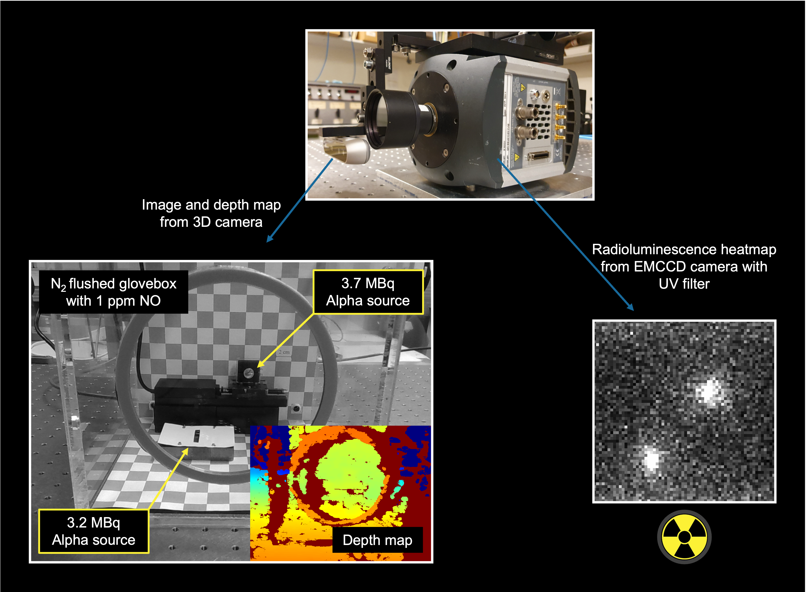

1.1Real-Time Imaging of Alpha Radiation
Alpha radiation is a highly ionizing form of radioactive radiation and thus hazardous. Traditional methods for detecting alpha radiation rely on direct contact with the alpha particles, limiting the detection range to a few centimeters. Alpha particles ionize nitrogen molecules in the surrounding atmosphere, leading to the emission of UV light via radioluminescence. By detecting this UV light, the detection range of alpha radiation can be extended to the order of meters. Compared to direct detection, remote sensing is less labor-intensive and poses a smaller safety risk to personnel mapping alpha sources. In this project conducted at Tampere University Applied Optics research group, I built and programmed a setup that captures an alpha-contamination heatmap with an EMCCD camera and overlays it on a video feed captured by a 3D camera for high-precision, real-time spatial mapping.
The experimental setup for demonstrating real-time alpha radiation imaging via a radioluminescent UV light signal is shown in Figure 1.1. Two MBq-level alpha radiation sources are placed in a glovebox flushed with N2 and 1 ppm of NO. Compared with the regular atmosphere, this mixture increases radioluminescent intensity by a factor of 100 and shifts the radioluminescent spectrum into the deep UV region, where there is no interference from sunlight or room lighting [1]. The scene is imaged simultaneously with an EMCCD camera equipped with a UV filter, which captures the alpha radiation heatmap, and a 3D camera that captures a regular visible-light image and a depth map. The alpha radiation heatmap is registered to the visible-light image in real time using the depth information for precise spatial mapping. A demonstration of real-time imaging is shown in Video 1.1.

The image registration is done as follows. Both cameras are modelled with the pinhole camera model. First, pixel coordinates from the depth camera image plane are converted to 3D points in the depth camera coordinate system using the depth information. For a single pixel, the transformation is given by [2]
where the subscript \(d\) refers to the depth camera, \((X,Y,Z)\) is a 3D point in the camera coordinate system and \((u,v)\) is a pixel coordinate. The 3D point can be trivially solved from the homogeneous coordinate on the left side since \(Z_d\) is known from the depth data. \(K\) is a camera intrinsic matrix defined by focal lengths \(f_x\) and \(f_y\) and principal point \((p_x,p_y)\) as
The point in the depth camera coordinate system is then converted to EMCCD coordinate system and projected to pixel coordinates in the EMCCD image plane. This transformation can be expressed as [2]
where the EMCCD camera is denoted with the subscript \(e\), and \([R|\vec t]\) is a 3×4 joint rotation-translation matrix where \(R\) and \(\vec t\) describe the rotation and translation between depth camera and EMCCD coordinate systems, respectively. The point in EMCCD image pixel coordinates is represented in homogeneous coordinates where \(s\) is a scaling factor of the projective transformation. The point of interest \((u_e,v_e)\) can be trivially solved from the homogeneous coordinate.
Equations (1.1) and (1.3) map a pixel from the depth camera frame to a pixel in the EMCCD camera frame, but we actually want to map in the opposite direction. The opposite mapping is obtained by first mapping the depth camera pixel to an EMCCD camera pixel, and then bringing that EMCCD pixel value to the corresponding depth camera pixel. This process is repeated for all depth camera pixels. The camera matrices \(K\) were found by calibrating the cameras, and rotation matrix \(R\) and translation vector \(\vec t\) were found by stereo calibrating the camera setup. The calibration was performed with OpenCV.
This projects demonstrates a real-time alpha radiation imaging setup that could used to monitor gloveboxes where hazardous and potentially unknown materials are handled. The results were presented by me at the Physics Days 2023 conference in an oral presentation.
- T. Kerst and J. Toivonen, “Intense radioluminescence of NO/N2-mixture in solar blind spectral region,” Optics Express, vol. 26, no. 26, pp. 33764–33771, 2018.
- R. Hartley and A. Zisserman, Multiple View Geometry in Computer Vision, 2nd ed. Cambridge University Press, 2004.